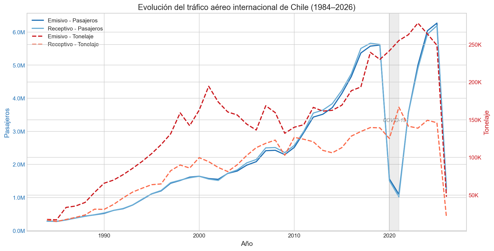
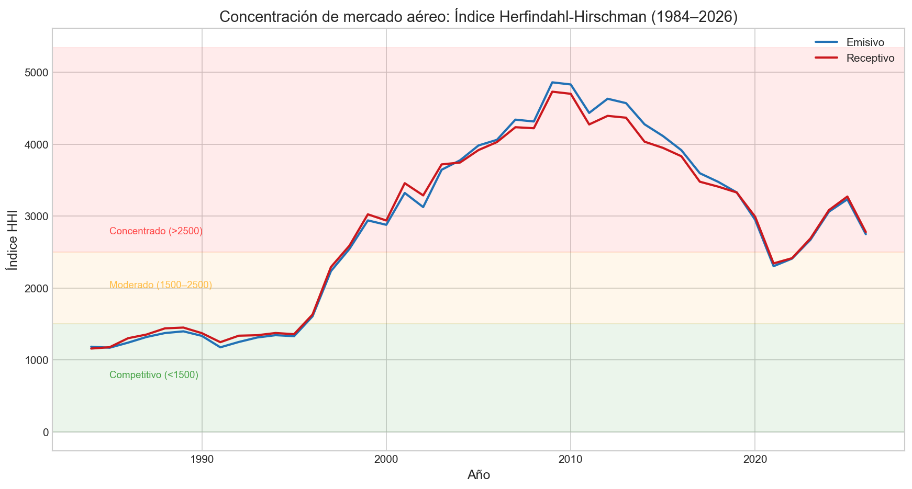
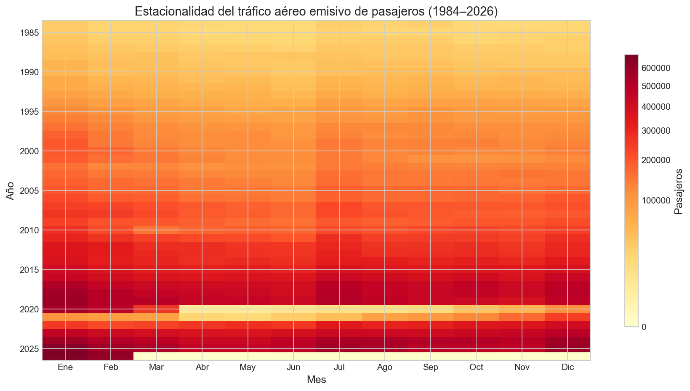
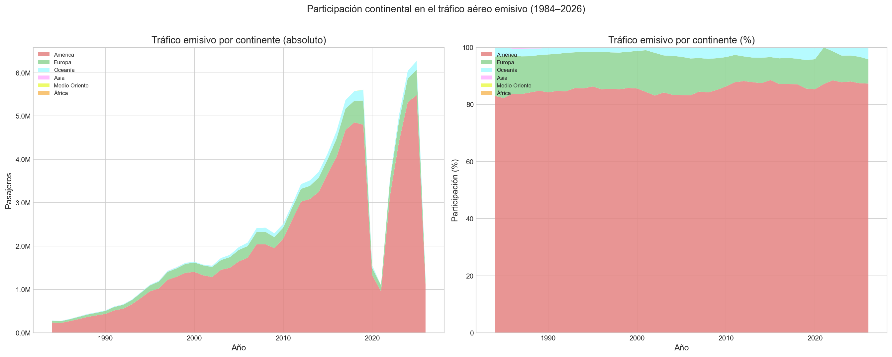
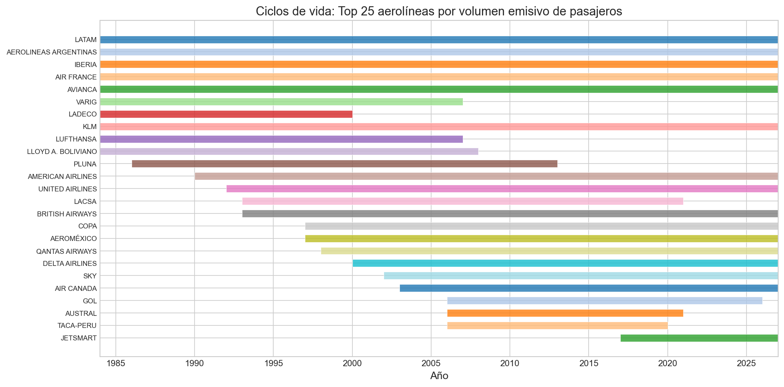
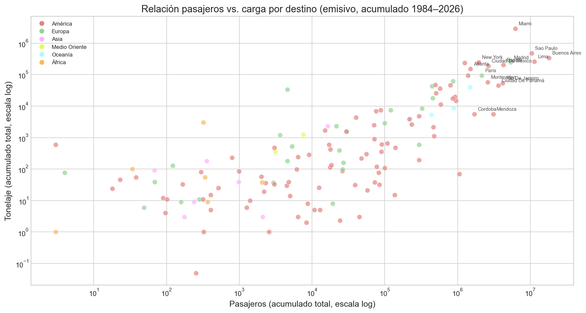
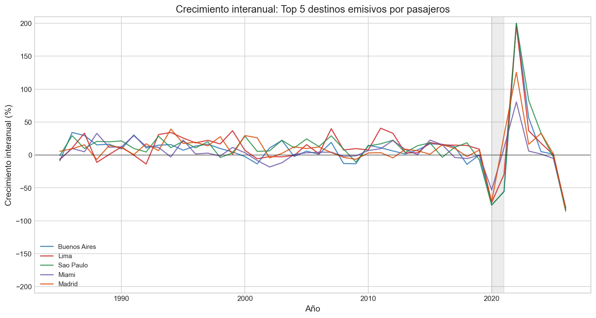

Este gráfico muestra el volumen total de pasajeros y carga del tráfico aéreo internacional de Chile entre 1984 y 2026, distinguiendo entre tráfico emisivo (desde Chile) y receptivo (hacia Chile). El doble eje permite comparar la evolución de pasajeros y tonelaje simultáneamente.

El tráfico de pasajeros muestra un crecimiento sostenido con una caída dramática en 2020 por COVID-19. La recuperación post-pandemia es notable, especialmente en el tráfico emisivo. El tonelaje tiende a seguir patrones similares pero con menor volatilidad, sugiriendo que la carga aérea es más resiliente a shocks.
El Índice HHI mide la concentración de mercado sumando los cuadrados de las cuotas de participación de cada aerolínea. Valores bajo 1500 indican un mercado competitivo; entre 1500 y 2500, moderadamente concentrado; sobre 2500, altamente concentrado.

El mercado aéreo chileno ha transitado por fases: alta concentración inicial (dominancia de pocas aerolíneas estatales/legacy), liberalización progresiva, y la entrada de operadores low-cost como SKY y JetSMART que han intensificado la competencia en años recientes.
El heatmap muestra el flujo mensual de pasajeros emisivos a lo largo de cada año. Los colores más intensos indican mayor tráfico. La estructura año × mes revela patrones estacionales recurrentes.

Se observa un patrón estacional claro con peaks en enero (verano austral) y julio (vacaciones de invierno). La amplitud estacional crece con el tiempo, reflejando un mercado más grande. Los años 2020-2021 aparecen como franjas claras, evidenciando el impacto COVID.
Muestra cómo se distribuye el tráfico emisivo de pasajeros entre los distintos continentes de destino, tanto en valores absolutos como en participación porcentual.

América domina ampliamente como destino del tráfico emisivo chileno. Sin embargo, la participación de Europa ha crecido de forma sostenida, mientras que Oceanía y Asia mantienen nichos menores pero crecientes. La composición continental revela la diversificación progresiva de las rutas internacionales.
Diagrama de Gantt que muestra el período de actividad de las 25 aerolíneas con mayor volumen de pasajeros emisivos. La longitud de cada barra indica el tiempo de operación.

Se identifican oleadas de entrada/salida de aerolíneas: las legacy carriers operan durante décadas, mientras que muchas aerolíneas tienen ciclos cortos. Las entradas recientes de low-cost (SKY, JetSMART) marcan una nueva era competitiva.
Scatter plot en escala logarítmica que compara el acumulado total de pasajeros y tonelaje por cada destino emisivo. Cada punto es una ciudad, coloreada por continente.

La mayoría de los destinos siguen una correlación positiva entre pasajeros y carga, pero existen outliers notables: destinos con alta carga relativa sugieren hubs logísticos/comerciales, mientras que destinos con alto flujo de pasajeros pero baja carga indican rutas predominantemente turísticas.
Muestra la tasa de crecimiento año a año del flujo de pasajeros de los 5 destinos emisivos más importantes. Este análisis revela la dinámica oculta por los valores acumulados del barchart race.

Las tasas de crecimiento revelan fases de aceleración y desaceleración no visibles en datos acumulados. El crash COVID genera caídas extremas seguidas de rebounds igualmente intensos. La velocidad de recuperación post-COVID varía significativamente entre destinos.